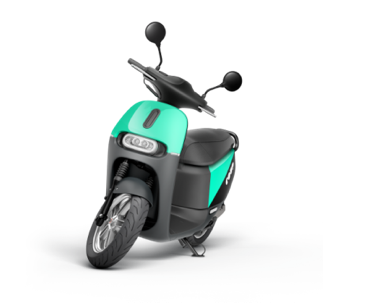
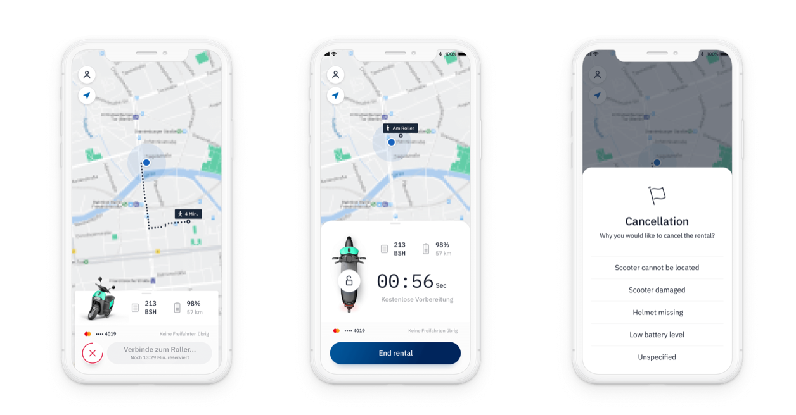
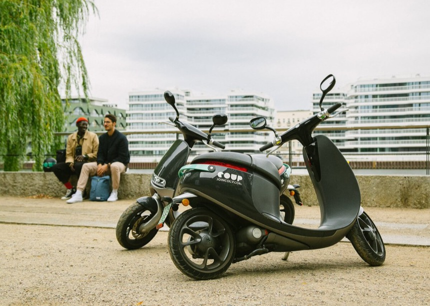
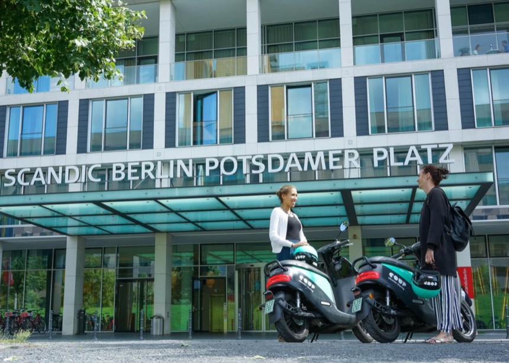
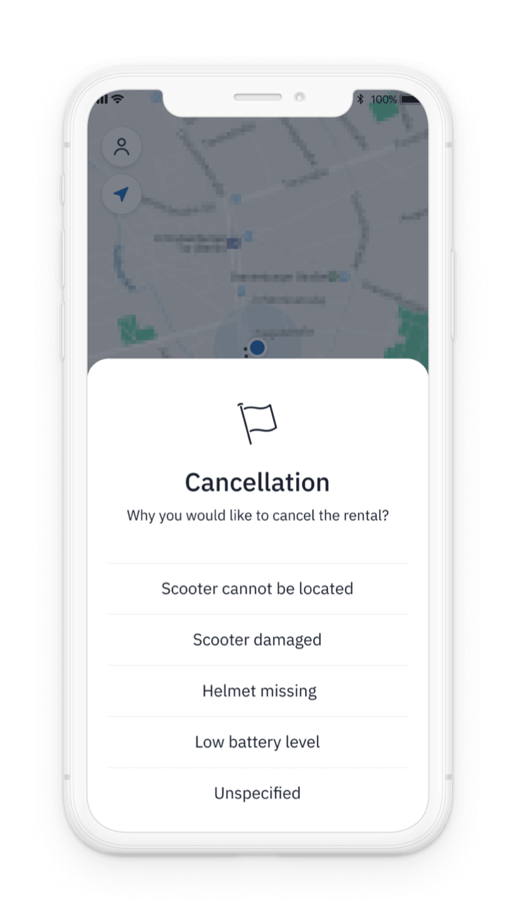

The consumer ride app
Making the ride feel as good
as the scooters.
The old app did the job. You could find a scooter, unlock it, and end the ride. But it felt purely functional, and riding an electric moped through a city is a good experience — the app should have felt like part of that, not a form you filled in.
So I started with a simple question: how should this feel to use? Talking to riders in all three cities, the answer that kept coming up was confidence — they wanted to feel in control and know what was going on. That's what I designed around.
I rebuilt the whole ride: the map, choosing a scooter, the pre-ride checks, the ride itself, and ending it. Small things mattered here — what information showed up when, how prompts were timed, how the little interactions felt. Those are the moments that make an app feel trustworthy or not.
The redesign also turned the rider app into a quiet source of data for the ops team. Instead of asking riders to report problems, I picked up signals at moments when something had clearly gone wrong. A three-tap prompt when someone cancelled a ride told us more than any proper reporting form would have — because riders actually used it.

Mapping the friction points in the existing ride flow before redesigning

After: a ride flow built around clarity and keeping the rider in control



Passive intelligence
One in eight rides was
cancelled. Nobody knew why.
About one in eight rides was cancelled before the engine even started — expensive, and nobody knew why. Damage? Low battery? Wrong scooter? Missing helmet? Without any data on it, every fix was a guess.
So I added a small prompt to the cancellation flow: a few options, one tap, and the rider was on their way. The ops team got a clear, timestamped record. Within a few weeks of launch we could finally see why rides were being cancelled, and start fixing the real causes instead of guessing.

Cancellation prompt — structured reporting built into a moment riders were already experiencing